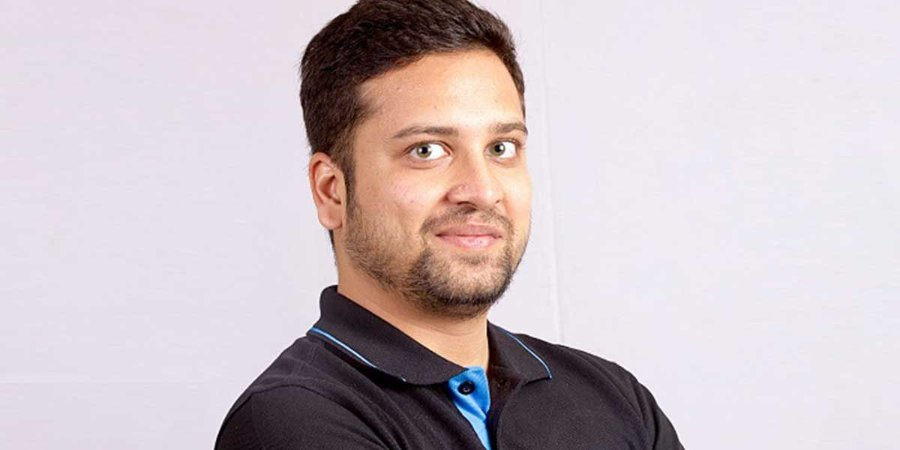

← Back to the founder directory

Binny Bansal
The engineer behind Flipkart's technology and operations, who went from a software job at Amazon to co-founding India's biggest e-commerce company, and then to backing the next generation of founders.
- Born
- 1982 or 1983, Chandigarh
- Country
- India
- Known for
- Flipkart, xto10x, Opptra
- Industry
- E-commerce, investing
Early life and education
Binny Bansal comes from Chandigarh. His father was a chief manager at a bank and his mother worked in the government sector. He went to St. Anne's Convent School and then to IIT Delhi, where he studied Computer Science and Engineering and graduated in 2005. At IIT Delhi he met Sachin Bansal, who would become his business partner. The two are not related.
Early career
After college, Binny worked for about a year and a half at the Sarnoff Corporation, where he reportedly helped develop a lane-change warning sensor for cars. In January 2007 he joined Amazon as a software engineer and stayed about nine months. He has said that Google had turned him down twice before that.
Co-founding Flipkart
In 2007, Binny and Sachin left Amazon. They first thought about building a comparison search engine, but decided the market for e-commerce in India, though tiny, was the better bet. They started with an online bookstore run from an apartment in Bangalore. Reports put their starting money at about US$6,000, while other accounts say ₹4 lakh. Binny handled much of the technology and the back-end systems, and Flipkart was reported to be taking around 100 orders a day by 2008.
Building the company
Binny was Flipkart's chief operating officer until January 2016, when he became CEO and Sachin moved to executive chairman. In 2017 he became Group CEO, with Kalyan Krishnamurthy taking over as CEO of Flipkart.
During these years Flipkart brought in features that were new for Indian shoppers, including cash on delivery, a 30-day replacement policy, its Flipkart First membership and its own logistics arm, Ekart. The Big Billion Days sale began in October 2014. The company also bought Myntra for about US$280 million in 2014 and Jabong for about US$70 million in 2016, and it acquired PhonePe in 2016.
The Walmart deal and stepping away
In 2018, Walmart bought about 77% of Flipkart for roughly US$16 billion. After the deal, Binny became chairman and continued as Group CEO, and his 5.5% stake was valued at about US$1 billion. In November 2018 he resigned following allegations of personal misconduct. According to the Wall Street Journal, a Walmart investigation did not find evidence to back the sexual assault claim, but it pointed to poor judgment in how he handled what he described as a consensual relationship with a former employee.
Binny later sold his remaining stake to Walmart, reported at about US$1.5 billion, and left the Flipkart board in early 2024. He also stepped down from PhonePe's board in November 2024 but remains a shareholder in the payments company.
Investor and builder
Since leaving Flipkart, Binny has become one of India's most active startup backers. He is an anchor investor in 021 Capital and an angel investor in companies such as BrightCHAMPS, Virgio, Flash, HireQuotient and Glints. By one count he has backed about 47 companies across 64 funding rounds. He co-founded xto10x Technologies, which helps startups scale, and runs the investment firm 3State Ventures. In 2019 he gave ₹125 crore to the IIT Delhi endowment fund, and in 2024 the early-stage community South Park Commons opened in India in collaboration with him.
In March 2025 he launched Opptra, where he is founder and chairman. The company runs franchise businesses that help consumer brands expand across Asia, using technology and a shared supply chain. In 2025 Plaksha University also launched the Binny Bansal Institute for AI and Robotics.
Timeline
- 2005Graduates from IIT Delhi and joins the Sarnoff Corporation.
- 2007Joins Amazon in January, then leaves to co-found Flipkart with Sachin Bansal.
- 2014Flipkart buys Myntra and holds the first Big Billion Days sale.
- 2016Becomes Flipkart CEO in January; named with Sachin Bansal to the TIME 100.
- 2017Becomes Group CEO.
- 2018Walmart buys a controlling stake in Flipkart; Binny resigns in November.
- 2019Gives ₹125 crore to the IIT Delhi endowment fund.
- 2023–24Sells his remaining Flipkart stake and leaves the board.
- 2025Launches Opptra in March.
Recognition
- The Economic Times Entrepreneur of the Year, 2012–13
- Forbes India Rich List, 86th with Sachin Bansal (2015)
- TIME 100 most influential people in the world, with Sachin Bansal (2016)
- India Today list of India's 50 most powerful people, 26th with Sachin Bansal (2017)
Leadership lessons
- Rejection is not the end. Binny was turned down by Google twice and still went on to co-found Flipkart.
- Fix what shoppers fear. Cash on delivery, easy returns and customer support helped people trust buying online for the first time.
- Pick a market that is small today but growing. Flipkart bet on e-commerce when few Indians shopped online.
- Setbacks can lead to the next chapter. After 2018, Binny turned to backing founders and building new companies.
Sources
Written from public information, including Wikipedia, StartupTalky and A Touch of Business, plus press reports on Opptra. The sources disagree on some details, such as his birth year, the starting capital and where he lives, so Wikipedia is followed where they differ. Several figures are reported rather than confirmed. Net worth is left out because estimates conflict.